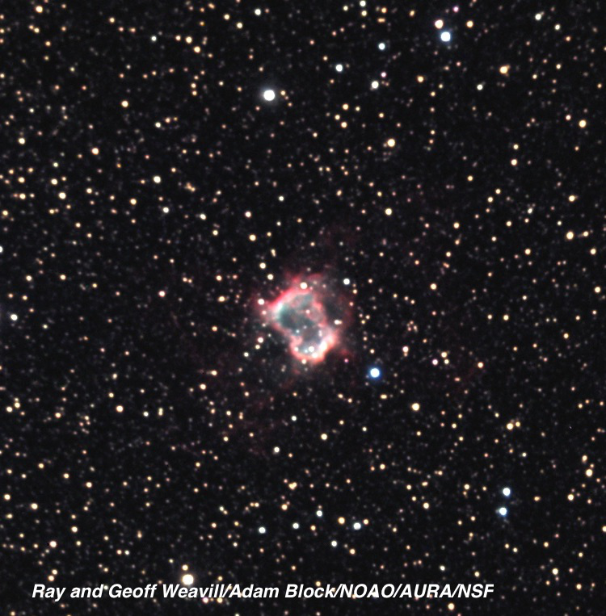
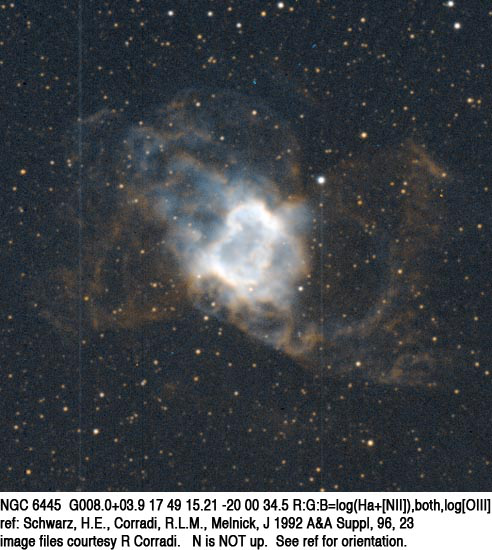

NGC 6842
- Name: NGC 6842 = PK 65+0.1 = PN G065.9+00.5 = LBN 149 = Sh 2-95
- Coordinates: 19 55 02.2 +29 17 21 (J2000)
- Size: 57"
- Vmag: ~13.5
NGC 6842 is one of the fainter planetaries discovered visually -- yet it was independently found by three different observers! It was missed by both William and John Herschel and discovered on 28 Jun 1863 by Albert Marth, observing assistant on William Lassell's 48-inch fork-mounted equatorial from the island of Malta.
NGC 6842 was rediscovered just a year later (on 26 Aug 1864) by German astronomer Heinrich d'Arrest using the 11-inch Merz refractor at the Copenhagen observatory, while searching for a different object. Finally, American astronomer Truman Safford found the planetary again on 12 Jul 1866 while hunting for nebulae with the 18.5-inch Clark refractor at the Dearborn Observatory in Illinois.
Heber Curtis reported in 1919 that it was undoubtedly a planetary nebula based on inspection of a Crossley photograph and he described it as "Very faint. It is about 50" x 45", showing traces of an irregular ring formation. It has a central star of about the 13th magnitude."

The distance to NGC 6842, based on the Gaia DR2 parallax, is ~6850 light years. Using an apparent size of ~55", the physical diameter is ~1.8 light years and the dynamical age (the length of time the bubble is expanding) is ~10,000 years.
NGC 6842 is situated in a rich star field, just south of the Cygnus border in Vulpecula, and 0.6° ESE of the open cluster NGC 6834. My earliest observation goes back 38 years ago to July 31th 1981, using a C-8. From a relatively dark site I simply called it "extremely faint, fairly small, diffuse." (100x). A month later I was surprised to glimpse it from my light-polluted front yard near Berkeley, California using a Daystar 300 filter (similar to a UHC) at 125x, using an over-the-head hood, averted vision and some concentration. I excitedly sent a note to Walter Scott Houston, who I had started corresponding with, and he highlighted the observation in detail in his Deep Sky Wonders column of November 1982. What a thrill!
I've made a number of observations over the years in various scopes -- 13", 18", 24" -- and it's always fun to try and detect as many of the nearby faint stars as possible. The central star is perhaps mag 15.5 and visible in my 18" scope. In addition, a mag 14 star is off the east edge [50" from center], a mag 14.5-15 star is just off the south end [47" from center], a mag 15.5 star is off the northeast edge [38" from center]. Also difficult mag 16-16.5 stars are right at the north-northwest edge and the east edge!
I didn't record any definite internal structure in my 18" (other than the central and nearby/superimposed stars), but the rim is definitely slightly brighter in sections or arcs with my 24". How much structure can you see?

As always,
"Give it a go and let us know!
Good luck and great viewing!"